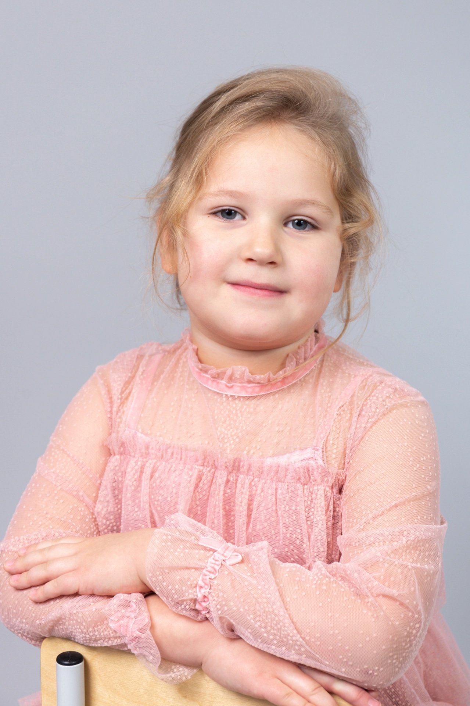
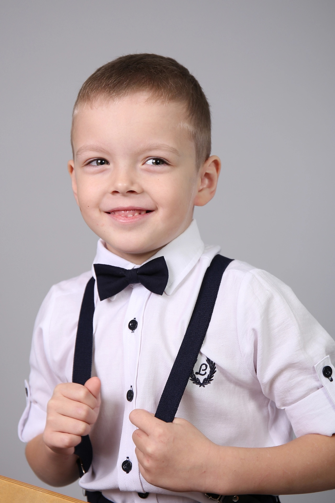
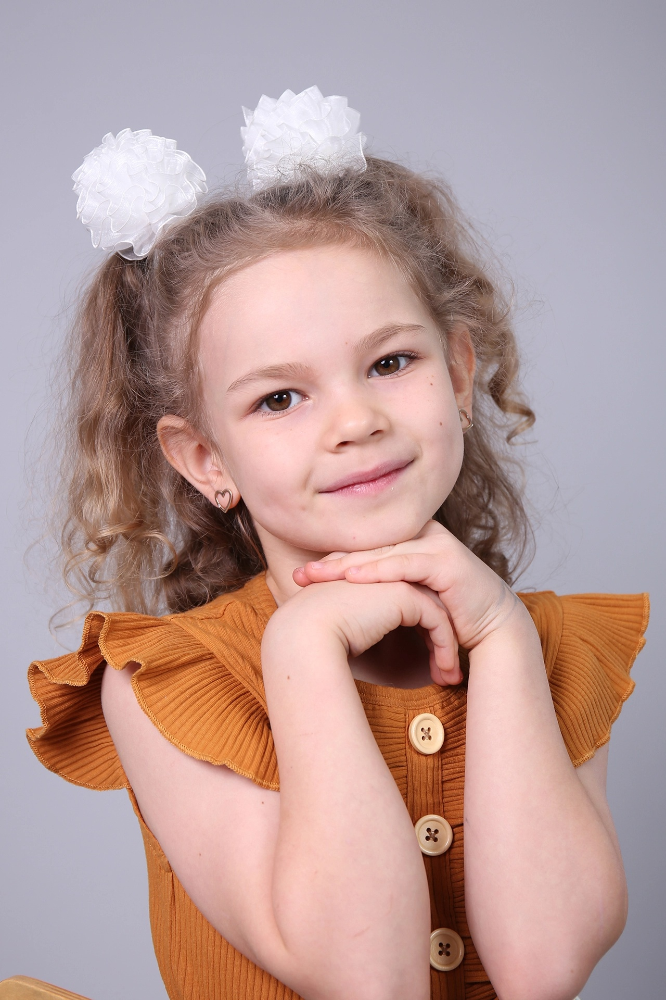
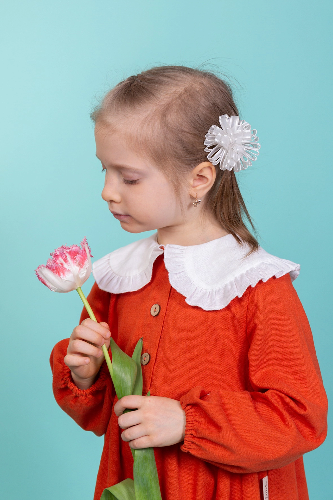
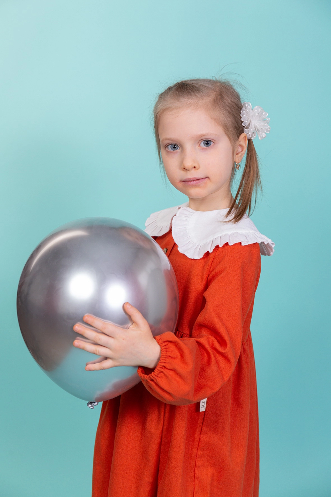
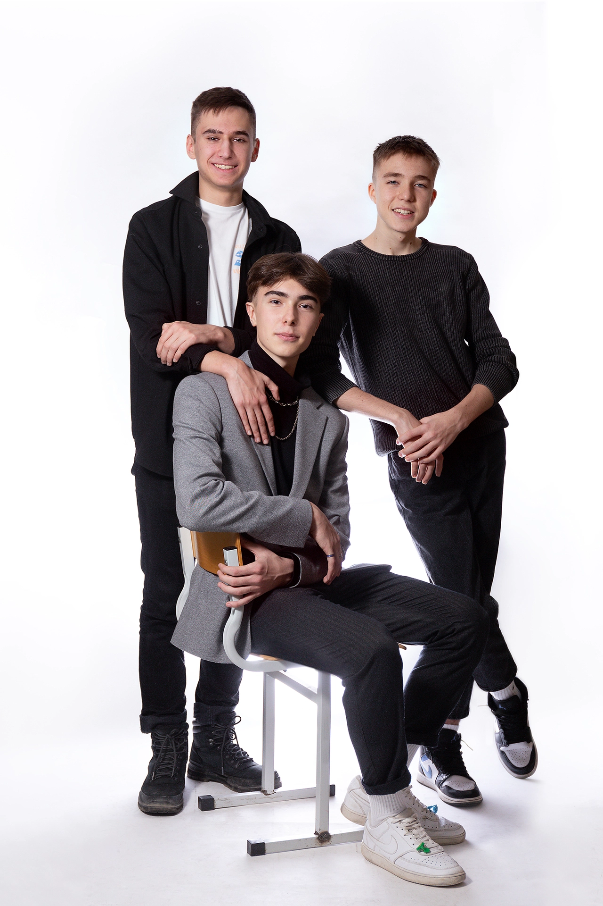
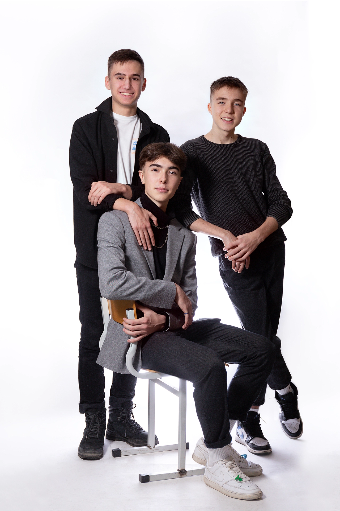

Фотография как произведение искусства. Это художественная фотография, причем не обязательно светлая в пастельных оттенках с мягким фокусом, это может быть и темная резкая фотография.
Екатеринбург 2022 Полина
Екатеринбург 2022 Анна


 
